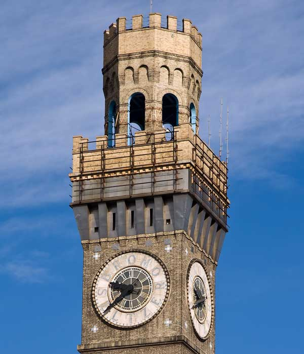
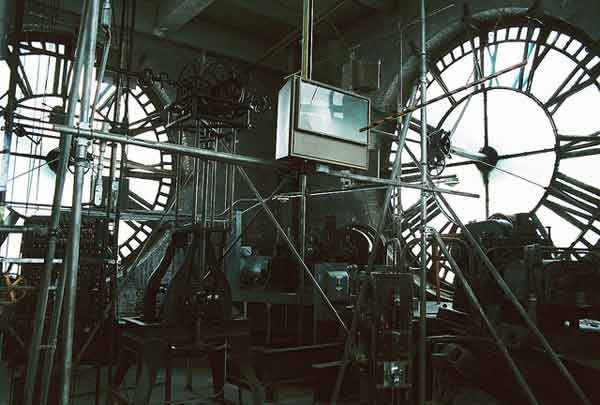

Bromo-Seltzer Tower
  21 S. Eutaw Street, Baltimore, MD 21201 410-821-7448Emerson Tower often referenced as Emerson Bromo-Seltzer Tower is a 15-story, 88 m (289 ft) skyscraper erected in 1911 at the corner of Eutaw and Lombard Streets in Baltimore, Maryland, designed by Joseph Evans Sperry for Bromo-Seltzer inventor "Captain" Isaac E. Emerson.
It was the tallest building in Baltimore from 1911 until 1923. The design of the tower along with the original factory building at its base was inspired by the Palazzo Vecchio in Florence, Italy, which was seen by Emerson during a tour of Europe in 1900. Systems engineering for the building's original design was completed by Henry Adams. The factory was demolished in 1969 and replaced with a firehouse
The building features four clock faces adorning the tower's 15th floor on the North, South, East and West sides. Installed by the Seth Thomas Clock Company at an original cost of US$3,965, they are made of translucent white glass and feature the letters B-R-O-M-O S-E-L-T-Z-E-R, with the Roman numerals being less prominent. The dials, which are illuminated at night with mercury-vapor lamps, are 24 feet (7.3 metres) in diameter, and the minute and hour hands approximately 12 and 10 feet (3.7 and 3.0 metres) in length respectively. Originally driven by weights, the moving parts are now electrically powered.
The tower originally had a 51 ft (16 m) Bromo-Seltzer bottle, glowing blue and rotating. Weighing 20 tons (18.1 tonnes), it was lined with 314 incandescent light bulbs and topped with a crown. The bottle was removed in 1936 because of structural concerns.
The tower was virtually abandoned in 2002, but in early 2007 the Baltimore Office of Promotion and the Arts began renovations to transform the building into 33 artists' studios. The Baltimore Fire Department's John F. Steadman Fire Station, which opened in 1973 and is situated at the tower's base, houses BCFD Hazmat 1, Airflex 1, Medic1, Medic 23, MAC23, Engine 23, Rescue 1, and formerly Truck 2.
The Emerson Bromo-Seltzer Tower was placed on the National Register of Historic Places in 1973. It is included within the Baltimore National Heritage Area.